Cannabis tissue culture SOP
Do these tasks in sequence to start a clean tissue culture line. Then you can increase the number of plants of a cultivar that has no disease. You can also give a plantlet with a test result to your grow room. Each task has a diagram and a form. A number [n] shows a source. It is not necessary to open the source to do the step.
Purpose and scope
This document is the SOP that you use to do the work. The tissue culture playbook is a longer document.
Two setups use the same tasks. A home setup has one room, a still-air box or a hood with a low price, and a pressure canner. A setup in a licensed facility has the same tasks. It also has lot numbers and a disease test.
A small [n] after a number or an instruction shows a source. It is not necessary to open the source to do the step. The list of sources is at the end.[1]
- The format of the lot number is YYYY-MM-DD-CULTIVAR-NN. Example: 2026-08-14-MD-01.
- In each work period at the hood, use only one cultivar.
- If you are not sure that a jar is clean, the jar is dirty. Discard the jar. Record the jar on F-07.
- Do not think that a plant is clean if F-10 does not show a negative qPCR result.
Most of the first batch will be defective. Reports show losses of 45% to 95% at the start.[4] Write the steps that you did. Next time, change only one variable.
Evidence and limitations
We want each paper to be correct. Thus we examine each paper for information that is not solid. This information comes from the view of one grower, from a small number of sources, or from grower methods that have no controlled test. We identify this information, and we do not show it as solid.
Frequently there is no paper for the decision that you must make. Then we use the reports of other growers and the methods that work in the rooms that we know. This information can help you, but it is not the result of a laboratory test. Use the methods that work for your plants, for your room and for your meters. If a table does not agree with your crop, use the data from your crop and record the difference.
- The primary definitions and the units of measurement in the paper
- Safety limits that have a citation to a regulation or a specification
- Target ranges for light, climate and feed in each stage. They are start values that you can change.
- SOPs that work in many rooms, but you must adjust them for your genetics and meters
- A number for yield or potency that you will always get, with no test at many sites
- Controller setpoints from a different facility, with no new calibration
If you find an error, make a report. We will correct it. Make the report on GitHub, with the name of the paper and the information that is incorrect. If you have a source, include it: Make a report of an accuracy problem. The regulations, labels and licenses of your area always override each procedure in these papers. The label weak in a paper shows the points where the risk of an error is highest.
Prepare the work area
Select one small room or a closed corner. The area must not have a carpet or a houseplant. Do not keep cardboard boxes in the area. Each of these areas is satisfactory: a bedroom that you do not use, a laundry or a sealed space in a cupboard.
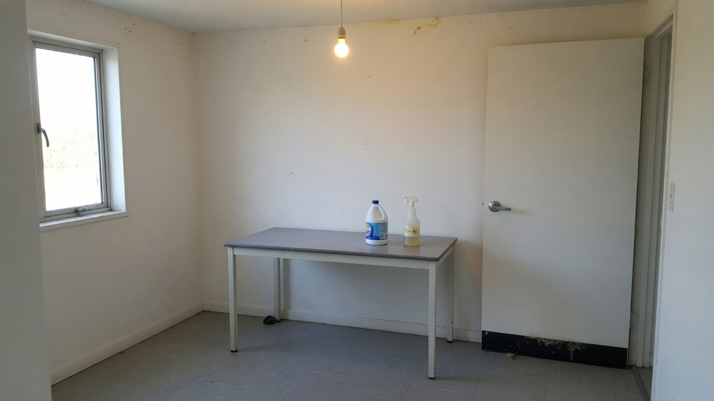
- 1Make the room emptyRemove the plants, the food, the cardboard, the fabric and the pet beds from the room. Remove the dust from the fittings of the ceiling.
- 2Clean with detergentUse warm water and household detergent on the walls, the floor, the bench, the door and the window sill. Then flush the surfaces with water.
- 3Clean with bleachMix 1 part household bleach (approximately 4–8% sodium hypochlorite) with 9 parts water. Apply the solution to the surfaces and keep them wet for 10 minutes. Flush the surfaces with water. Put on gloves. Open a window.
- 4Clean with alcoholClean the hard surfaces with 70% ethanol or isopropyl alcohol. Let the surfaces dry.
- 5Seal the gapsUse tape to seal the gaps that you can see in the walls. If the door has a gap, install a door sweep. If you cannot remove the carpet, put sealed vinyl on it.
- 6Instructions for the room after this stepDo not eat in the room. Do not go into the room in outdoor shoes. Do not keep cardboard in the room. Keep the door closed while you do the work. Only one person at a time can be at the hood.
Treatment of the room each week, after you start the work
- Clean the floor and the door handle with detergent. Then clean them with 70% alcohol.
- Clean the bench and the steel of the hood with 70% alcohol at the start of each work day (Task 1).
- Remove the waste from the bins after each work period. Do not let dirty jars stay in the room at night.
- The hood can have a UV lamp. Operate the UV lamp only when the sash is down and no person is in the room. Make sure that no UV light goes into your eyes. Clean the tube each month. The UV lamp gives more protection, but it does not replace the HEPA fan.
| Date | Name | Floor | Bench | Door | Hood steel | Waste removed from bin | Signature |
|---|---|---|---|---|---|---|---|
| Put a mark in each check box when you do the task. If a check box has no mark, do not start cultures on that day. | |||||||
Selection and installation of a laminar-flow hood
You can use a still-air box. A horizontal laminar-flow hood is easier to use. You can purchase a hood from China at a low price. Make sure that you tell the seller the correct specification. When you receive the hood, do a check of it.
Definitions of the terms
- Horizontal laminar flow. The air moves in one direction, from the face of the filter to you. Use this type for work with plants. The hood gives protection to the plant. It does not give protection to your lungs.
- HEPA H13 / H14. A grade of filter. An H13 filter stops 99.95% of the particles of 0.3 µm. An H14 filter stops a larger percentage of the particles. Each grade is satisfactory. A “HEPA-like” filter and foam pads are not satisfactory.
- Pre-filter. A pad with a low price that you can clean. It is in front of the HEPA filter. It keeps dust away from the HEPA filter. The HEPA filter has a high price. If the listing has no pre-filter, do not select that listing.
- Face velocity 0.30–0.50 m/s. The speed of the clean air that comes out of the filter. A speed of less than 0.3 m/s is not sufficient. A speed of more than 0.6 m/s makes the tissue dry and can cause dirt to go back into the work area.
Where to find a hood
Use these terms to find hoods. Do not change the terms. Open the listing. Send the checklist below to the seller before you purchase the hood.[22]
| Site | Terms to use | Link |
|---|---|---|
| AliExpress | horizontal laminar flow hood H14 HEPA | list of hoods on AliExpress |
| AliExpress, example of a type of hood | H13/H14 hoods at approximately USD 260–500 | item 1005010452823851 (examine the current specification) |
| Alibaba | horizontal laminar flow hood H14 plant tissue culture | results on Alibaba |
| Alibaba, type of hood with a brand | BIOBASE clean bench / LAF | BIOBASE LAF listing |
| Prices change. The cost of freight and a plug for 220–240 V are more important than a difference of $40. | ||
Message to the seller
Send the list below to the seller as one message. If the seller cannot give the information, do not purchase the hood.
- Give the type of the cabinet. It must be a horizontal laminar-flow cabinet and not a biosafety cabinet.
- Give the HEPA grade: H13 or H14. Send the EN1822 certificate (or an equivalent certificate) for the lot of this filter.
- The hood must have a pre-filter and a HEPA filter as two parts. Give the size and the price of a replacement HEPA filter.
- Give the face velocity at the work opening, in m/s.
- The voltage and the plug must be for 220–240 V (change this value if your power supply is 110 V).
- Give the width of the work opening in mm. The width must be a minimum of 400 mm (16 in).
- Send photos of the gasket of the filter and the nameplate of the fan before the shipping.
Prices
- A small metal hood for a bench has an H13 or H14 filter and a width of 400–700 mm (16–28 in). The price is frequently USD 260–700, plus freight.
- A full-size clean bench (BIOBASE type): the price is frequently USD 800–2,000, plus freight in a crate.
- A portable hood of the Athena type, from the market for used equipment, can have a higher price than a new bench from China. Compare the specifications of the filter, not the brand name.
Do not purchase a cardboard mushroom box with a furnace filter. Do not purchase a vertical “nail salon” table that has no HEPA grade. Do not purchase a hood that has a foam sheet in the photos and HEPA in the listing. Do not purchase a biosafety cabinet if you are not sure that protection for the operator is necessary. A biosafety cabinet is the incorrect tool, and its price is higher.
When you receive the hood
- 1Examine the hoodMake sure that the frame of the HEPA filter has no damage. Make sure that the plastic stays on the face of the filter. Make sure that the fan does not make a rattle.
- 2Put the hood in positionUse a bench that is level and stable. Keep 30 cm (12 in) of free air behind the intake or below the intake. The correct position is different for different models. Do not push the hood against a curtain.
- 3PowerRead the nameplate. A unit for 220–240 V becomes defective when you connect it to 110 V. Use a power board with surge protection.
- 4First operationMake sure that the hood is empty. Operate the fan for 30 minutes. Listen to the fan. Smell the air for a burned odor.
- 5Check of the airflowHold a thin strip of tissue paper in the work opening. The strip must bend in the direction of the airflow, to you, and stay stable (horizontal hood). The strip must not move up and down, go back to the hood or hang down with no movement. If the strip does this, send a message to the seller before you use the hood.
- 6Clean the hoodClean the painted steel and the work tray with 70% alcohol. Do not spray liquid on the face of the HEPA filter.
- 7Optional test with smokeHold an incense stick 20 cm (8 in) in front of the filter. The smoke must move away from the filter in one sheet. It must not go back to the bench.
- 8Record the dataWrite the data on F-12. If the tissue paper hangs down with no movement, do not put plants in jars.
| Date | Hours of operation | Tissue paper strip correct? | Noise / odor | Pre-filter cleaned? | Signature |
|---|---|---|---|---|---|
| Do this check when you install the hood, then each month, and after each change of a filter. | |||||
Use a still-air box. A still-air box is a transparent plastic container on its side, with two arm holes. Clean the inner surfaces with 70% alcohol. Make sure that the fans are off. The tasks are the same, and the steps of the SOP do not change. The work is slower, but the price is lower.
Opening procedure
Do this task each day that you do the work. Do it before you open a jar.
- 1ClothingPut on clean clothing with long sleeves. Make sure that your hair does not hang down. Do not go into the room in outdoor shoes. In a licensed lab, put on a gown, a hair cover and gloves. Write the data on F-13.
- 2Start the hoodMake sure that the hood is empty. Operate the hood for 20 minutes. If the fan makes a new noise or a burned odor, stop the hood.
- 3Form F-01Clean the floor, the bench, the door, the steel of the hood and the bin. Record the work on the form.
- 4GlovesPut on new nitrile gloves. Spray the gloves with 70% alcohol. Spray the gloves again after you go out of the room.
- 5Put the items in the hoodPut the closed jars, the tools and the waste bag for this work period on the left. Do not put other items in the hood.
| Date | Time in | Gown | Hair cover | Gloves | Jewelry removed | Time out | Signature |
|---|---|---|---|---|---|---|---|
Mix the medium, sterilize it and keep it for 7 days
The quantity in this task is one liter. Use full-strength MS to start cultures and for multiplication. Use half-strength MS to make roots in gel.
| Ingredient | 1 liter | Information |
|---|---|---|
| RO or distilled water | Start with 800 mL. Then add water to 1 L. | Do not use tap water. |
| MS basal salts | 4.4 g | For half strength, use 2.2 g. Many media for rooting use half strength. |
| Sucrose | 30 g | Table sugar is satisfactory. |
| myo-Inositol | 0.1 g | Add it. Do not add it if your MS contains it. |
| Activated charcoal | 1 g (optional) | It helps to decrease browning.[1] |
| Agar | 6–8 g. Use 9.5 g if the shoots have glassy growth. | [4] |
| PPM (optional) | 0.5–2 mL | Use the rate on the label. PPM does not replace a meristem cut.[16] |
| pH | 5.6–5.8 before you add agar | Then sterilize the medium |
| Use for | Add this after you are sure that MS gives good results | Dose |
|---|---|---|
| Start of the culture (usual method) | TDZ + NAA | 1 µM + 0.5 µM[1][2] |
| Start of the culture (weaker hormone) | meta-Topolin | 0.48 mg/L[3][4] |
| Long-term multiplication | No hormone, plus more calcium | Calcium nitrate 0.71 g/L + calcium gluconate 1.35 g/L[4] |
| Roots in gel | IBA | 5 µM. A higher dose gives a worse result.[1] |
- 1WeighWrite each mass on F-03 before you put the medium in the jars.
- 2pHSet the pH to 5.6–5.8 before you add agar. To decrease the pH, add dilute acid. To increase the pH, add dilute base.
- 3Agar and heatDissolve the agar with heat. Fill each jar to one third with medium. Keep the lids loose.
- 4SterilizeUse a stovetop pressure canner that holds 103 kPa (15 psi), or an autoclave. Sterilize at 121 °C (250 °F) and 103 kPa (15 psi) for 20 minutes. An Instant Pot is not satisfactory for this step. Put the jars on a rack. The jars must not be in the water.
- 5Let the jars become coolWhen the jars are sufficiently cool to touch, tighten the lids. Put a label with the lot number on each jar.
- 6HoldKeep the jars on a shelf for 7 days. If a jar has a cloud or mold, discard all the jars of the lot. Do not put explants in these jars.
| Date | Load ID | 121 °C? | 15 psi? | 20 min? | Cool / dry | Defective? | Signature |
|---|---|---|---|---|---|---|---|
| If you write no for 121 °C, 15 psi or 20 min, discard the load. | |||||||
| Lot no. | Date | MS g | Sugar g | Agar g | pH | Hormone | PPM mL | Jars n | Clean on day 7? | Signature |
|---|---|---|---|---|---|---|---|---|---|---|
| Lot no. = YYYY-MM-DD-MED-NN. Write this number on F-04. | ||||||||||
Prepare the explant and sterilize its surface
In the first batches, use a stem piece with one bud, 10–15 mm (0.4–0.6 in) long. Do not use a meristem.
- 1MotherThe mother plant must be in vegetative growth. Examine it for pests. Use a new plant if you can. Use one cultivar.
- 2CutCut in the morning. Each piece must be 10–15 mm (0.4–0.6 in) long. Remove the large leaves. Keep the pieces wet.
- 3Clean with soapUse tap water with a drop of dish soap or Tween-20. Do this for 10–20 min.
- 470% alcoholKeep the pieces in the alcohol for 30–60 seconds. Then drain the alcohol.
- 5
- 6Clean with sterilized waterClean the pieces three times with sterilized water. Keep the pieces in the water for 3–5 min each time. Then put the pieces in the hood.
- 7Remove the endsCut the ends from the stem when they are white or have damage from the bleach. Put the new end of the stem in the gel.
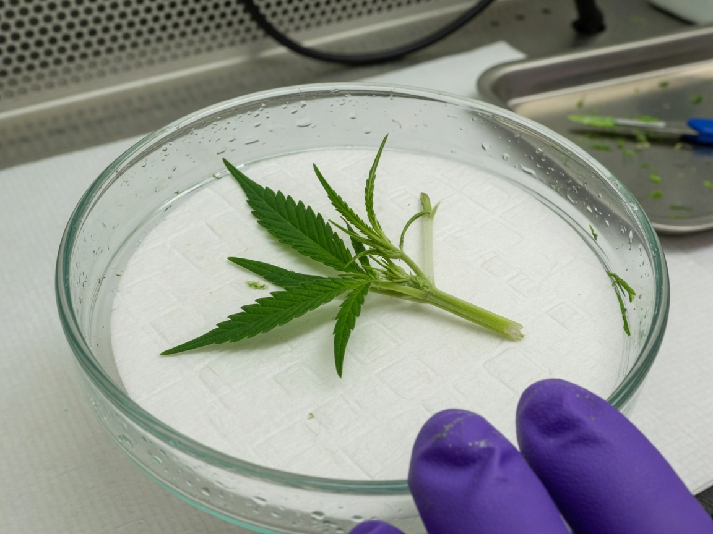
Explants in jars: labels and incubation
Put one piece in each jar until you know your rate of good results.
- 1AirflowDo the work 10–20 cm (4–8 in) in front of the filter. Do not do the work at the edge of the hood.
- 2One lidHold the lid with its face down, at the side of the jar. Do not hold the lid above the jar.
- 3Put the explant in the jarPut the end that you cut in the gel. Keep the bud above the gel.
- 4LidPut the lid on the jar immediately. Do not speak above the jar.
- 5LabelWrite the cultivar, the date, the type of explant and the lot number from F-03 on the label.
- 6ShelfKeep the jars at 24–26 °C (75–79 °F). Use 16–18 h of light, at approximately 70–100 µmol m⁻² s⁻¹. Do not open a jar to examine the culture.
| Lot no. | Cultivar | Explant | n put in jars | Medium lot | Date | Day-7 clean n | Day-21 clean n | Signature |
|---|---|---|---|---|---|---|---|---|
| The value n put in jars must be the same as the number of explants that you put in the jars. The sum of Day-7 clean n and the number of discarded jars must be the same as n put in jars. | ||||||||
Examine the cultures and discard defective jars
Examine the jars on day 7 and on day 21. Look through the glass. Do not open a jar if you are not sure that it is clean.
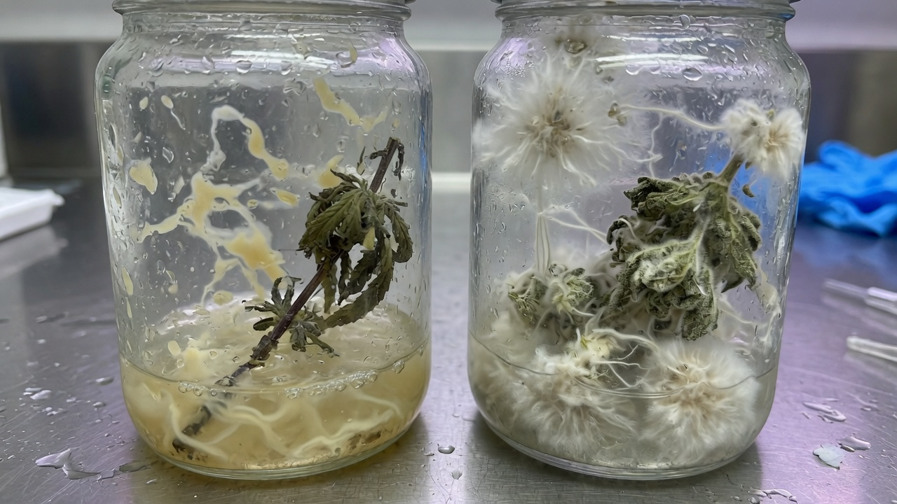
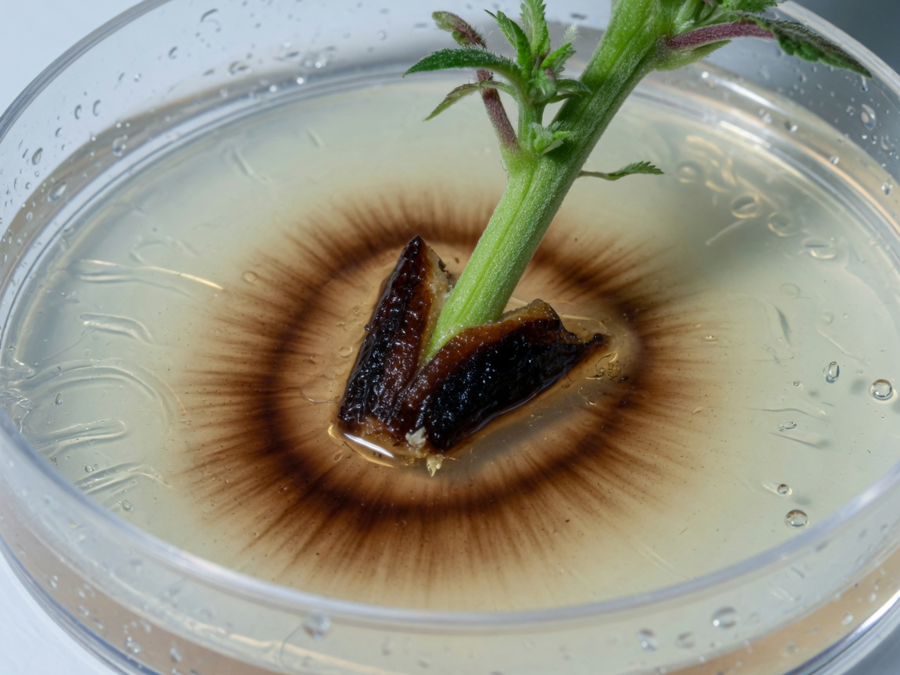
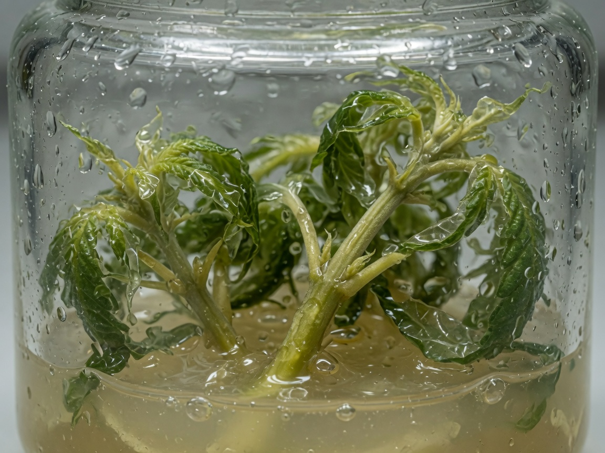
| Date | Lot no. | Jar ID | Bacteria / fungus / browning / glassy growth | Decision (discard / monitor) | Signature |
|---|---|---|---|---|---|
| Write one line for each discarded jar. With these lines you can find if your technique becomes better. | |||||
Shoot multiplication and subculture
Use only jars that were clean on day 21. Use a new jar each time.
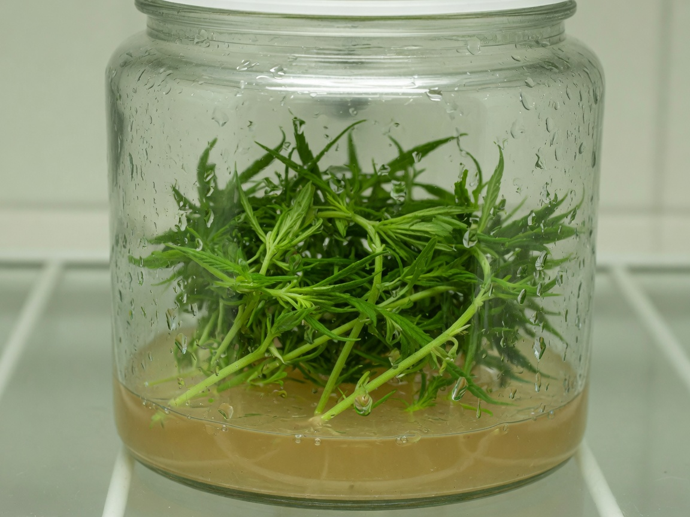
- 1Source jarUse a jar that was clean on day 21. Use one cultivar.
- 2CutCut a shoot tip or a node with a bud that you can see. Each piece must be 15–25 mm (0.6–1.0 in) long.
- 3New jarUse the same medium or the medium that has no hormone and more calcium.[4]
- 4DensityAt home, put 1–3 explants in each jar. In a licensed facility, the rate in F-07 gives the number of explants for each jar.
- 5TimeThe time for each subculture is 3–4 weeks. After approximately five subcultures, start the line again from a mother plant with a negative test result.[9]
| Date | From lot | New lot | Cultivar | n moved | Medium lot | Day-21 clean n | Signature |
|---|---|---|---|---|---|---|---|
Meristem dissection after process validation
Use a microscope. The piece is 0.2–0.4 mm (0.008–0.016 in) long. Then do a lab test. This task does not make a plant “clean” if you do not do the lab test.
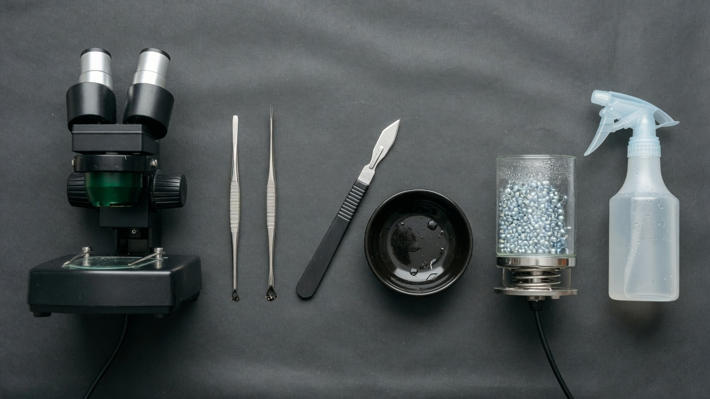
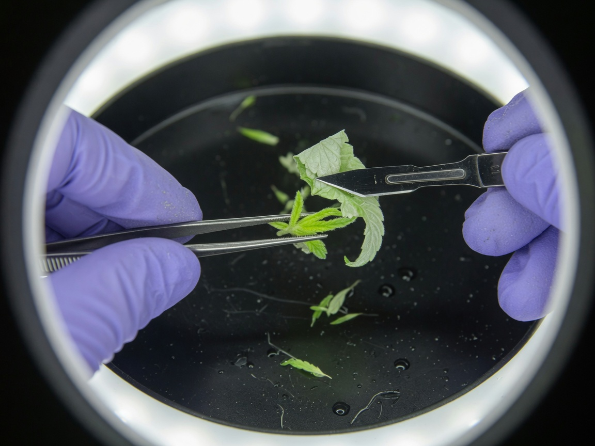
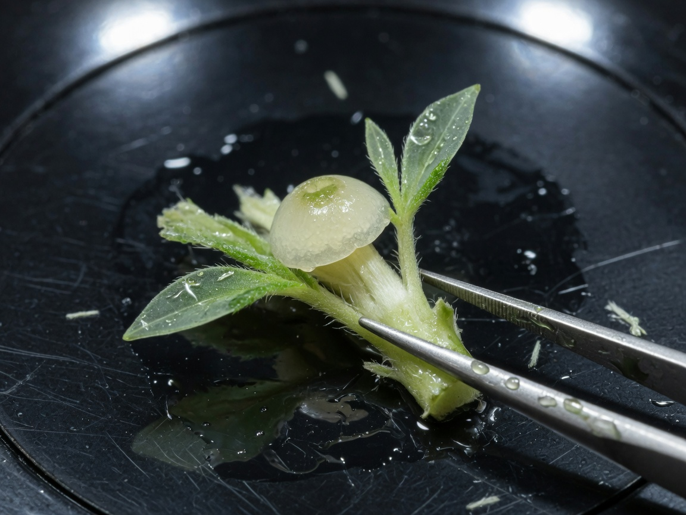
- 1New growthCut a vegetative tip of 10–15 mm (0.4–0.6 in). Remove the large leaves before you put the tip in the hood.
- 2Sterilized toolsSterilize the tools in a glass-bead sterilizer at approximately 250 °C (approximately 480 °F) for 20 s. Then let the tools become cool.
- 3DishPut one drop of sterilized water on the dish. Use a magnification of 10–20× and then of 30–40×.
- 4Remove the leavesRemove the outer leaves. Stop when you see two small leaves.
- 5Put the tip in bleachUse a shorter time in the bleach than for a woody node. Then clean the tip with sterilized water.
- 6
- 7WaitWait for 4–8 weeks. Then do the test on F-10. At six months, approximately 41% of the plants will have a negative test result. It is not 100%.
| Date | Mother ID | n tips | n put in jars | Medium lot | n in good condition at week 8 | F-10 result | Signature |
|---|---|---|---|---|---|---|---|
Rooting and acclimatization
A shoot with no roots is not a plant. In a culture jar, the relative humidity of the air is almost 100%. Thus the plant cannot close its stomata, and it does not make a layer of wax on its leaves. In the jar, it is not necessary for the plant to keep water.
When you move the plant directly to open air, it wilts in a small number of hours. The problem is the speed of the change and not the new conditions. Decrease the humidity in steps. This procedure is acclimatization.
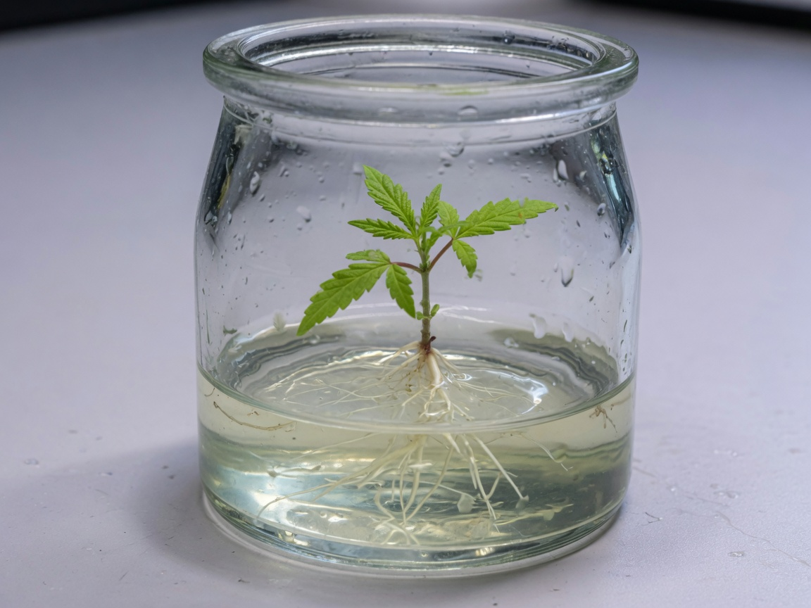
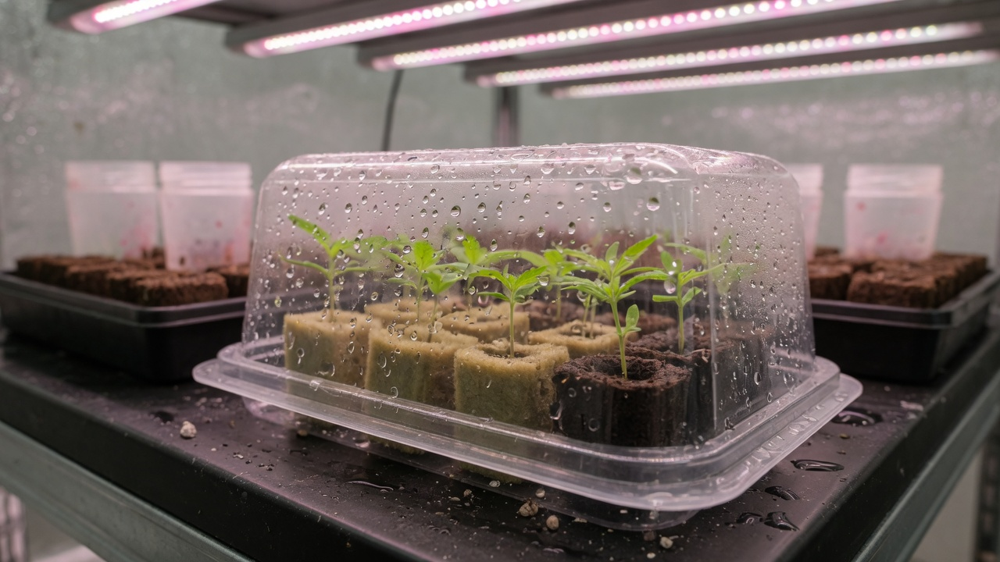
- 1Select a shootSelect a shoot of 2–4 cm (0.8–1.6 in). Do not select a shoot with glassy growth. Do not select a brown shoot.
- 2Make roots
- 3PlugUse a plug of rockwool or coco. Soak the plug in a weak nutrient solution for vegetative growth. The pH must be approximately 5.8.
- 4DomeSpray water on the walls of the dome. Use 16 h of light, with a low light intensity, at 24 °C (75 °F).
- 5VentsOn day 7, open the vents half. On day 9, open the vents fully. On day 14, remove the lid.
- 6PotUse the procedure for a new clone. For some weeks, do not use a photoperiod of 12 hours.
| Date | From lot | Method (gel / dip / no-sugar) | n | n with roots at week 4 | Signature |
|---|---|---|---|---|---|
| Date out | Lot | Plug type | n | n in good condition on day 14 | Signature |
|---|---|---|---|---|---|
Tests, intake and lot records
If F-10 has no result, the plant is a clone. It is not a clean mother plant.
- 1SampleGet a sample from a new leaf of full size, or from the leaf stalk. Do this after the plant makes new growth.
- 2LabUse a lab that does the RT-qPCR test for cannabis Hop latent viroid. Root tissue gives the most accurate result, if the lab can use roots.
- 3Test againDo the test again 3–4 weeks after the first test, and before a mother plant goes into production.
- 4Retain sampleFreeze the remaining tissue from each lot with a “not detected” result.
| Date | Plant / lot | Tissue | Lab | HpLVd | Other | Retain sample ID | “Not detected” result? | Signature |
|---|---|---|---|---|---|---|---|---|
| Write yes only for a “not detected” result. For a different result, put the plant in quarantine or discard it. Do not write “clean” in this column. | ||||||||
| Date in | Cultivar | Source | Room | Pests? | F-10 date | F-10 result | Release / discard | Signature |
|---|---|---|---|---|---|---|---|---|
| Lot no. | Opened | Closed | Cultivar | F-03 | F-04 n | F-07 discarded | F-10 | Decision for the lot |
|---|---|---|---|---|---|---|---|---|
| Write one line for each lot. In the last column, write one of these: multiplication, rooting, mother plant or discard. | ||||||||
70% alcohol does not break the RNA of Hop latent viroid. Put the tools in 5–10% household bleach for 1–2 minutes, or in 1000 ppm hypochlorous acid for 1 minute. Then flush the tools with water.[6] If you can, use one blade for each cultivar.
Procedure of operation for each week
| Day | Home | Licensed facility |
|---|---|---|
| Monday | Use form F-01. Fill the jars with the medium of Sunday. | Use forms F-01 and F-13. In the media kitchen, use F-02 and F-03. |
| Tuesday | Put 10–20 nodes in jars. Use F-04. | Use only mother plants with the decision “release” on F-11. Put their explants in jars. |
| Wednesday | Do the multiplication of the jars that were clean on day 21. Use F-05. | Use one cultivar for each hood. Use F-05. |
| Thursday | Examine the jars. Use F-07. | Examine the jars. Record each lot with photos. Use F-07. |
| Friday | Make roots in gel or do an IBA dip. Use F-08. If it is the time for a test, send the samples for F-10. | Do one batch of qPCR tests. Put the plants that have no negative result in quarantine. |
| Saturday–Sunday | Do not open jars. | Monitor only the alarms. |
Troubleshooting
| Problem | Change only this |
|---|---|
| More than 50% of the jars are dirty at day 7 | Move your hands more slowly. Use a new mother plant. Use a smaller tip. |
| More than 50% of the jars are dirty after day 14 | Use meristem dissection (Task 7). You can also soak the explants in 4–5% PPM.[16] Change the substrate of the mother plant. |
| The explants become brown in 48 h | Use a shorter time in the bleach. Add charcoal. Cut the ends from the stem. |
| The leaves have glassy growth | Use no cytokinin. Use 9.5 g/L agar. Use a lid with a vent. |
| No roots at week 5 | Use 5 µM IBA or a 15 mM IBA dip. Do not use more hormone. |
| The plants die in the dome | Keep the vents half open for a longer time. Use rockwool and not a bubbler. |
| The plants have no problem that you can see, but they are defective in flower | You did not do the F-10 test. |
Information on sources
The marks in this document point to this section. It is not necessary to read this section to do the work for one day.
The photos are illustrations. Use the diagrams for the size and the sequence.
Do the cultivation of cannabis only where the law lets you do it. This SOP gives information on horticulture. It does not give legal advice.
References
- Holmes JE et al. (2021). Variables affecting shoot growth and plantlet recovery in tissue cultures of drug-type Cannabis sativa L. Frontiers in Plant Science, 12:732344. https://pmc.ncbi.nlm.nih.gov/articles/PMC8491305/
- Lata H, Chandra S, Khan IA, ElSohly MA (2009). Thidiazuron-induced high-frequency direct shoot organogenesis of Cannabis sativa L. In Vitro Cell. Dev. Biol.-Plant 45:12–19. https://doi.org/10.1007/s11627-008-9167-5
- Lata H, Chandra S, Techen N, Khan IA, ElSohly MA (2016). In vitro mass propagation of Cannabis sativa L.: a protocol refinement using novel aromatic cytokinin meta-topolin. J. Appl. Res. Med. Aromat. Plants 3:18–26. https://doi.org/10.1016/j.jarmap.2015.12.001
- Das R, Kretzschmar T, Mieog JC (2024). Importance of media composition and explant type in Cannabis sativa tissue culture. Plants 13(18):2544. https://doi.org/10.3390/plants13182544
- Atallah OO et al. (2023). Hop latent viroid: a hidden threat to the cannabis industry. Viruses / PMC. https://pmc.ncbi.nlm.nih.gov/articles/PMC10053334/
- Transmission, spread, longevity and management of hop latent viroid in cannabis in North America (2025). PMC. https://pmc.ncbi.nlm.nih.gov/articles/PMC11902214/
- Kodym A, Leeb CJ (2019). Back to the roots: protocol for the photoautotrophic micropropagation of medicinal Cannabis. Plant Cell Tiss. Organ Cult. 138:399–402. https://doi.org/10.1007/s11240-019-01635-1
- Kurtz LE et al. (2022). Ex vitro rooting of Cannabis sativa microcuttings and their performance compared to retip and stem cuttings. HortScience, 57(12):1576. https://journals.ashs.org/hortsci/view/journals/hortsci/57/12/article-p1576.xml
- Torkamaneh D et al. (2024). Somatic mutation accumulation in micropropagated cannabis is proportional to the number of subcultures. Plants, 13(14):1910. https://pmc.ncbi.nlm.nih.gov/articles/PMC11279941/
- Ioannidis K, Tomprou I, Mitsis V (2022). An alternative in vitro propagation protocol of Cannabis sativa L. presenting efficient rooting, for commercial production. Plants 11(10):1333. https://doi.org/10.3390/plants11101333
- Monthony AS, Page SR, Hesami M, Jones AMP (2021). The past, present and future of Cannabis sativa tissue culture. Plants 10:185. https://doi.org/10.3390/plants10010185
- Page SRG, Monthony AS, Jones AMP (2021). DKW basal salts improve micropropagation and callogenesis compared with MS basal salts in multiple commercial cultivars of Cannabis sativa. Botany 99:269–279. https://doi.org/10.1139/cjb-2020-0179
- Cryopreservation of shoot tips of elite cultivars of Cannabis sativa L. by droplet vitrification (2019). Medical Cannabis and Cannabinoids (Karger). https://pmc.ncbi.nlm.nih.gov/articles/PMC8489323/
- A temporary immersion system to improve Cannabis sativa micropropagation (2022). Frontiers in Plant Science. https://www.frontiersin.org/articles/10.3389/fpls.2022.895971/full
- Plant Cell Technology (2023–2024). How to tissue culture cannabis; Achieving disease-free cannabis stocks; How to sterilize your explants; Build a home tissue culture lab; PPM™ directions for use. (source not from a journal, for example from a manufacturer) https://plantcelltechnology.com/
- Plant Cell Technology. Plant Preservative Mixture (PPM™) product directions: 0.05–0.2% standard; 4–5% soak for endogenous load. (source not from a journal, for example from a manufacturer) https://plantcelltechnology.com/products/plant-preservative-mixture-ppm
- Athena Ag, Culture Kit, ROOTS/SHOOTS media, and Plant/Media/Lab Prep procedure (manufacturer documentation). (source not from a journal, for example from a manufacturer) https://www.athenaag.com/culture-kit
- Murashige T, Skoog F (1962). A revised medium for rapid growth and bio assays with tobacco tissue cultures. Physiol. Plant. 15:473–497. https://doi.org/10.1111/j.1399-3054.1962.tb08052.x
- Driver JA, Kuniyuki AH (1984). In vitro propagation of Paradox walnut rootstock. HortScience 19:507–509. https://doi.org/10.21273/HORTSCI.19.4.507
- Lubell-Brand JD, Kurtz LE, Brand MH (2021). An in vitro–ex vitro micropropagation system for hemp. HortTechnology 31:199–207. https://doi.org/10.21273/HORTTECH04779-20
- Punja ZK, Collyer D, Scott C, Lung S, Holmes J, Sutton D (2019). Pathogens and molds affecting production and quality of Cannabis sativa L. Front. Plant Sci. 10:1120. https://pmc.ncbi.nlm.nih.gov/articles/PMC6811654/
- AliExpress / Alibaba laminar-flow listings. Confirm H13/H14 + pre-filter + 0.30–0.50 m/s before paying. (source not from a journal, for example from a manufacturer) https://www.aliexpress.com/w/wholesale-laminar-flow-hoods.html
Each citation in the paper, for example [1], refers to an item in this list. Each item is a primary source or an instruction from an authority, unless the item shows a different type. The results of cannabis tissue culture change much with the genotype. Before you use the dilutions, hormone doses and local regulations, make sure that they agree with the primary sources.